Componentes de una computadora
Componentes
- Gabinete y Fuente
- Motherboard
- CPU microprocesador
- Cooler
- Disco Rígido. HD
- BIOS y pila
- Chipset: northbridge, southbridge
- RAM
- Procesador Gráfico
Fuente de alimentación, Power Supply
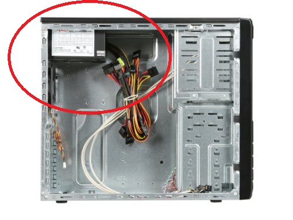
Fuente de alimentación, de cerca.
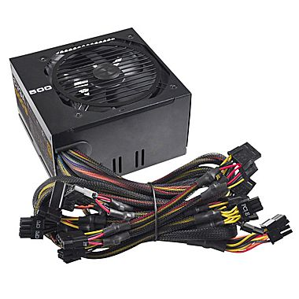
Muchas fuentes de alimentación.
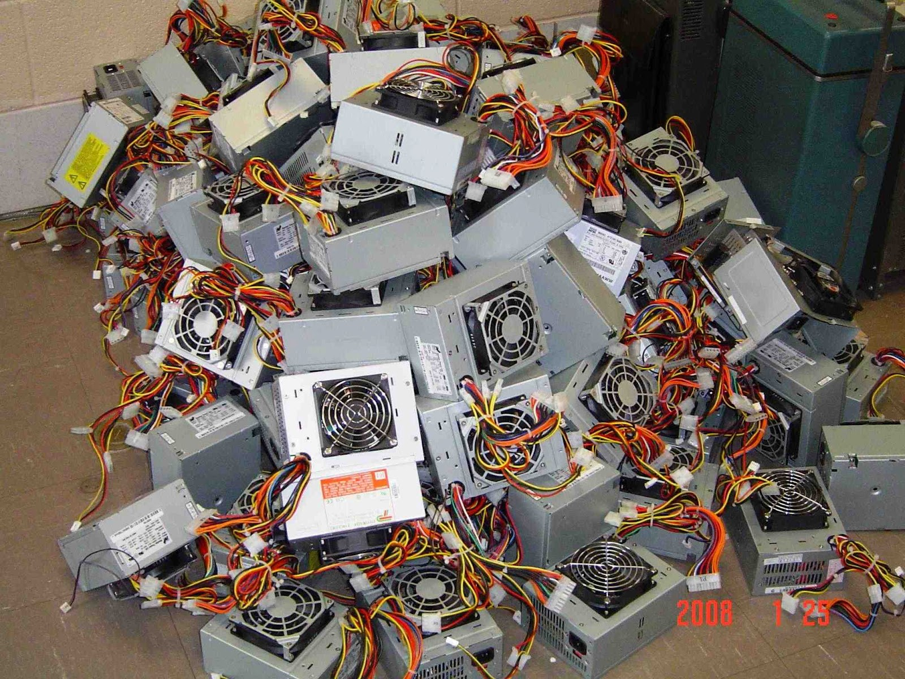
Placa madre, Motherboard
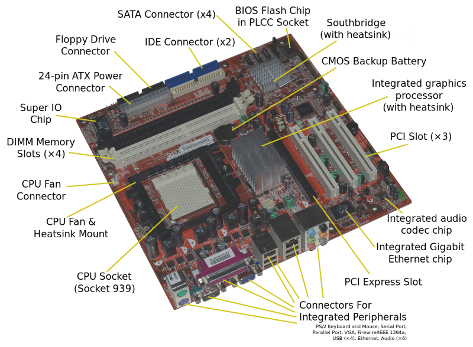
Factores de forma. Placa madre, Motherboards
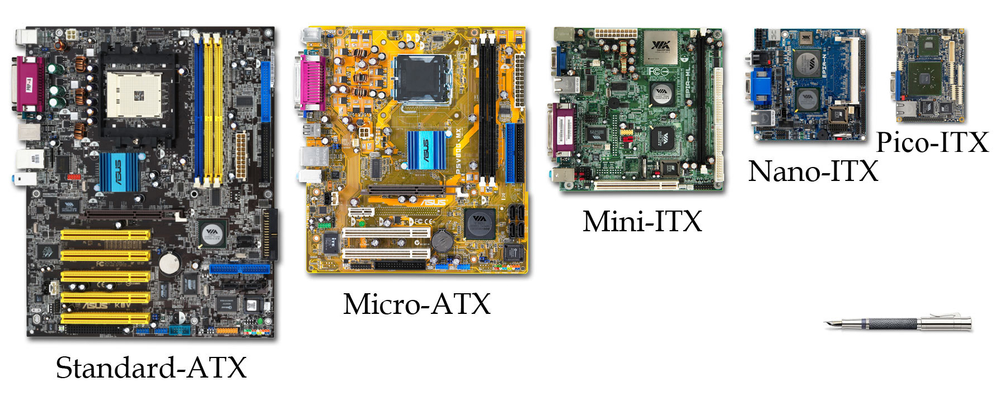
Motherboard en gabinete
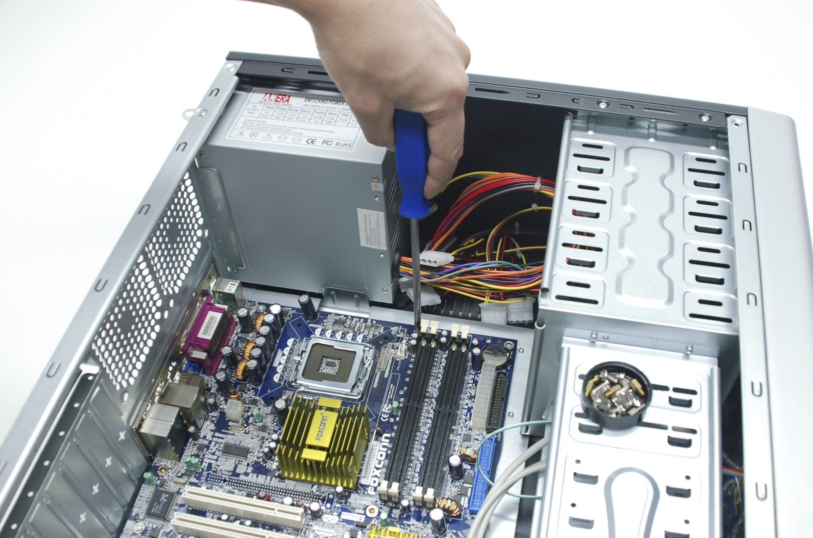
Disco Rígido, hard disk.
Conector IDE. Disco magnético.
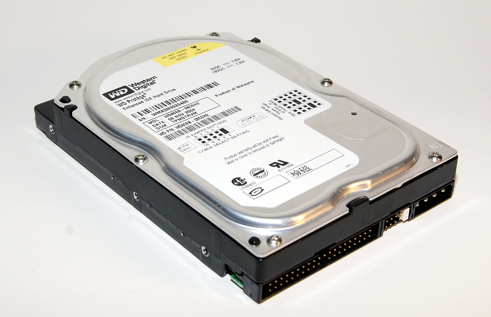
Disco Rígido, hard disk.
Conector SATA. Disco magnético.
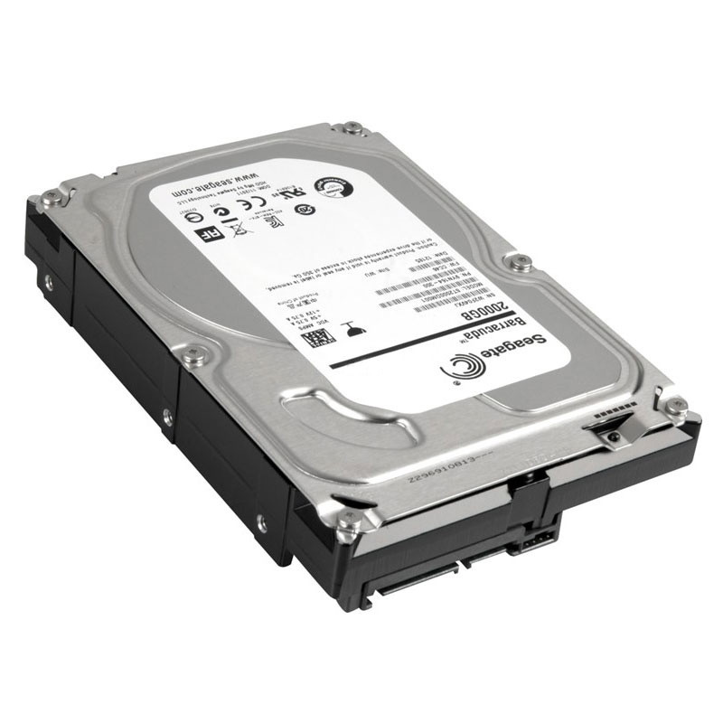
Disco Rígido, hard disk.
En gabinete.
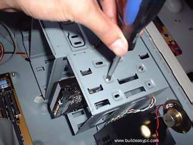
Disco Rígido, hard disk.
Conectores Sata y Sata M2. Discos de estado sólido.
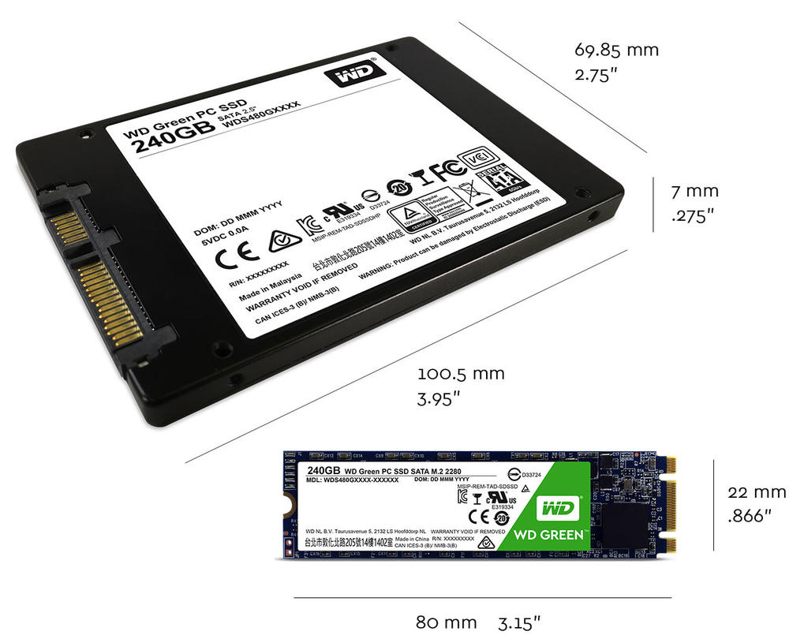
Microprocesador.CPU.
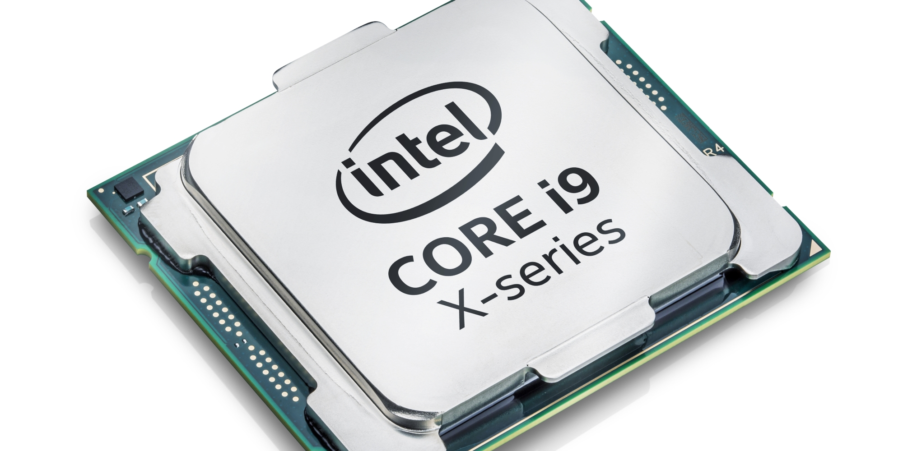
Microprocesador.CPU.
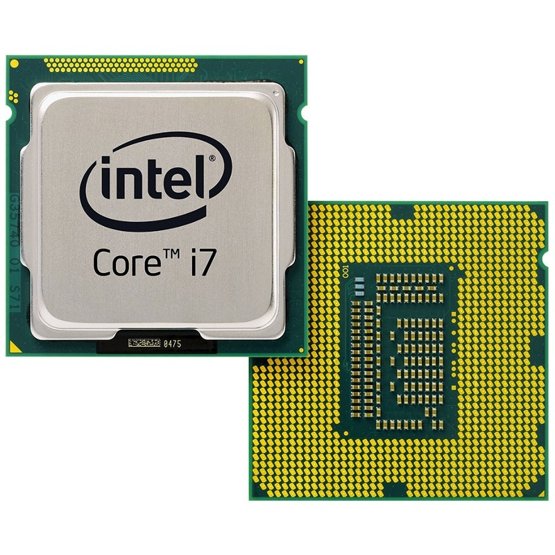
Disipador y Ventilador CPU. Cooler
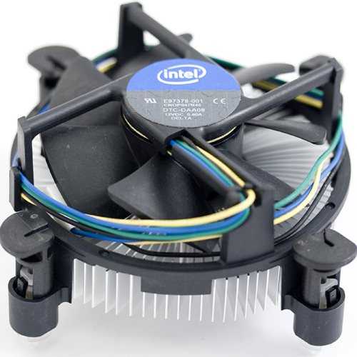
Disipador y Ventilador CPU. Cooler
Grasa siliconada. Pasta térmica.
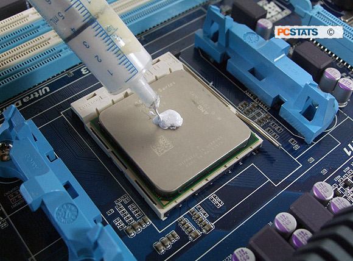
Disipador y Ventilador CPU. Cooler
Instalado
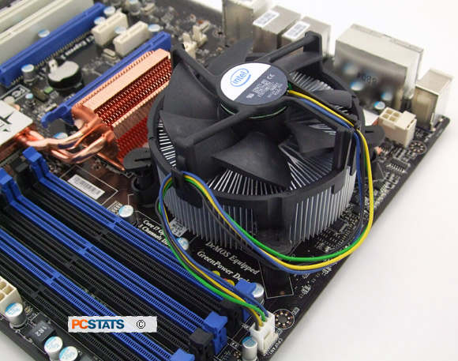
Conectores Motherboard
- IDE
- IDE power
- SATA
- IDE y SATA
- ATX 24 pines
- Conectores RAM
- CPU fan
- CPU socket
- Jumpers
- PCI, PCI express
- PS/2
- Conectores al panel
Conectores Externos
- Sonido: line in, line out, mic
- USB
- Paralelo DB25
- Serie DB9
- Ethernet